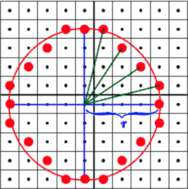
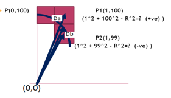
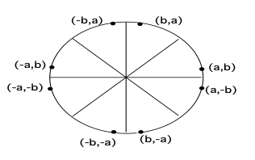

THEORY :
As the circle is collection of points that are at equal distance from the center of the circle. There are various methods to find the points on the circumference of the circle with respect to the center of the circle. The different methods are listed as below:
-
Trigonometric Method :
x=rcosθ and y=rsin θ
-
Polynomial Method :
x2+y2=r2
-
Midpoint Circle Algorithm
-
Bresenham Circle Algorithm

-
As shown in the figure1 the spacing between plotted pixel positions is not uniform.
Bresenham Circle Algorithm plots the first pixel which lie on the Y axis with the coordinates as (0, Radius).
-
Bresenham Circle Algorithm makes the use of decision parameter to calculate the next pixel location from a previously known pixel location (x, y).
-
In Bresenham’s algorithm at any point (x, y) we have two option to choose the next pixel in the X–direction either (x+1, y) or (x+1, y-1).
-
Consider the case explained below:

-
If the point P1 is far away from actual circle;it will yield greater +ve value Da
i.e Da = x^2 + y^2 - R^2
-
If (Da +Db>=0); then point P2 is closer to Actual Circle else P1 is closer
-
If the point P2 is closer to the actual circle, then the x will be incremented and y will be decremented. If the point P1 is closer to the actual circle, then the x will be incremented and y will remain same.
-
With the use of Bresenham circle drawing algorithm computation can be reduced by considering the symmetry of circles.
-
8 Way Symmetry:
A point (a,b)can be represented with the use of 8 way symmetry as

-
(a ,b); (a,-b); (-a ,b); (-a,-b) and (b, a); (b,-a); (-b, a); (-b,-a);